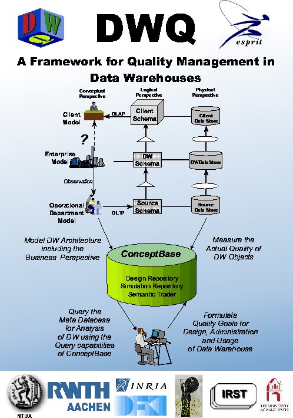
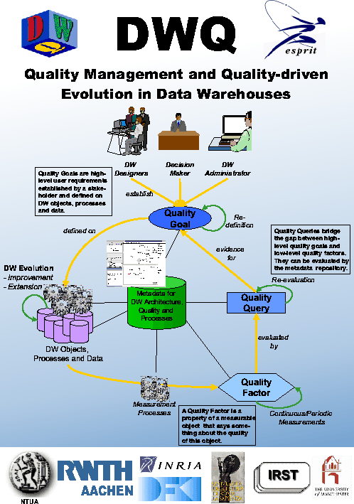
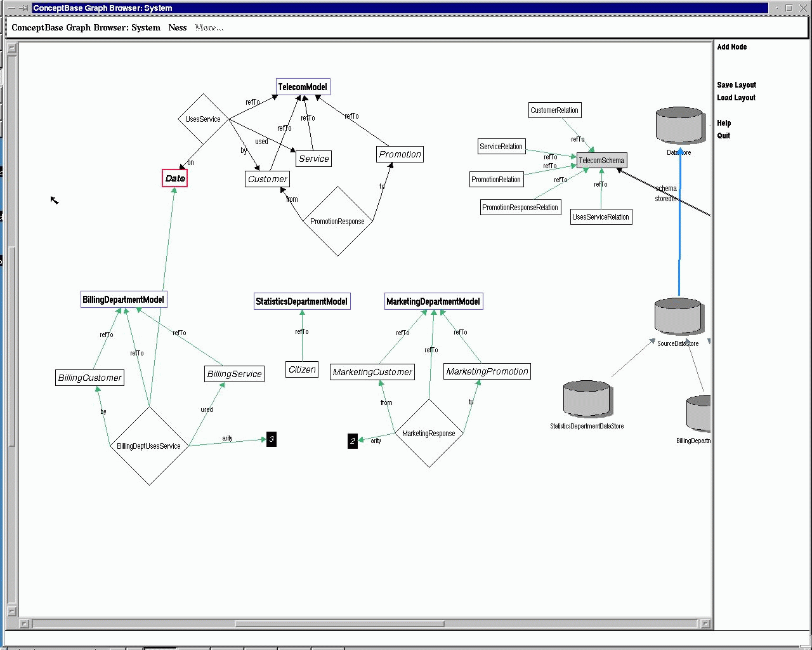
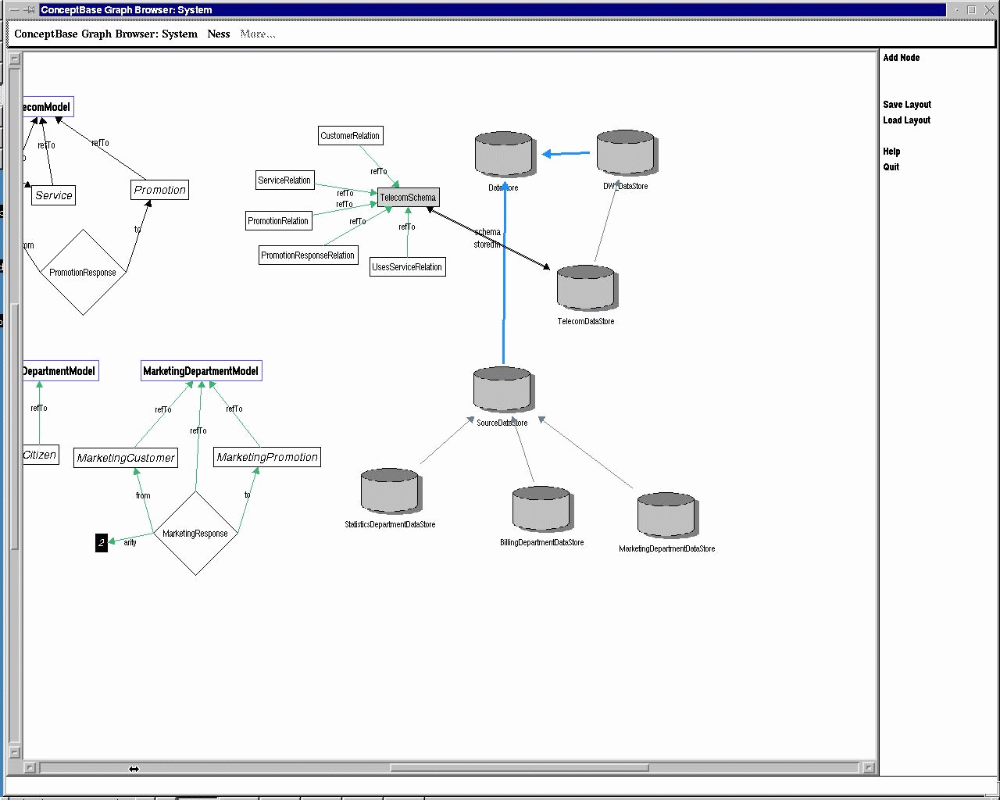
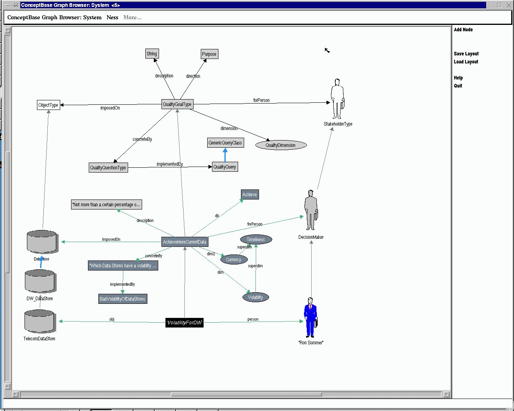
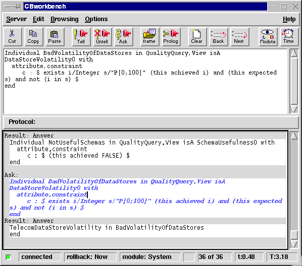

| Overview | The Metadata Repository ConceptBase |
Source Integration
and Conceptual Modelling |
Data Reconciliation | References |
In the DWQ project we have advocated the need for enriched metadata facilities for the exploitation of the knowledge collected in a data warehouse. In [JJQV99], it is shown that the data warehouse metadata should track both architecture components and quality factors.
During the analysis of existing data warehouse frameworks we made the observation that these frameworks cover only logical schemata and their physical implementation; hence, interpretation of these representations is far from being natural for data warehouse users. Furthermore, since data warehouses may be built on a huge number of heterogeneous data sources, it is difficult to have an overall picture of what kind of data is available in each source and to keep track of the interdependencies between these data sources. Finally, any data warehouse design should satisfy some quality requirements without which the derived decision data become useless.
Therefore, we have extended the traditional data warehouse architecture in three ways:

In the following, we will show some screenshots of the implementation of the framework in the metadata repository system ConceptBase.
The first screenshots shows the conceptual perspective and partially the logical perspective. These models represent the formalisms described in [CDG+97, CDG+98, CDG+99].
The next screenshot shows the logical and physical perspective. The physical perspective represents data warehouse components such as databases, transformation agents, etc. All perspectives are linked. A data warehouse component has a logical schema, and a schema represents a conceptual object.
Each object in any level and perspective of the architectural framework can be subject to quality measurement. Since quality management plays an important role in data warehouses, we have incorporated it in our metamodeling approach. Thus, the quality model is part of the metadata repository, and quality information is explicitly linked with architectural objects. This way, stakeholders can represent their quality goals explicitly in the metadata repository, while, at the same time, the relationship between the measurable architecture objects and the quality values is retained.
The DWQ quality metamodel [JJQV99] is based on the Goal-Question-Metric approach (GQM) of [OiBa92] originally developed for software quality management. In GQM, the high-level user requirements are modeled as goals. Quality metrics are values which express some measured property of the object. The relationship between goals and metrics is established through quality questions.The main difference in our approach resides in the following points: (i) we make a clear distinction between subjective quality goals requested by the stakeholders and objective quality factors attached to data warehouse objects, (ii) quality goal resolution is based on the evaluation of the composing quality factors, each corresponding to a given quality question, (iii) quality questions are implemented and executed as quality queries on the semantically rich metadata repository.
The figure and the screenshot below shows the DWQ Quality Model. A quality goal is an abstract requirement, defined on data warehouse object types, and documented by a purpose and the stakeholder interested in. This roughly expresses natural language requirements like ‘improve the availability of source s1 until the end of the month in the viewpoint of the data warehouse administrator’. Quality dimensions (e.g. ‘availability’) are used to classify quality goals and factors into different categories. Furthermore, quality dimensions are used as a vocabulary to define quality factors and goals; yet each stakeholder might have a different vocabulary and different preferences in the quality dimensions. A quality factor represents an actual measurement of a quality value, i.e. it relates quality values to measurable objects. A quality factor is a special property or characteristic of the related object with respect to the quality dimension of the quality factor. It also represents the expected range of the quality value, which may be any subset of a domain. Dependencies between quality factors are also stored in the repository. Finally, a quality goal is operationally defined by a set of questions to which quality factor values are provided as possible answers. As a result of the goal evaluation process, a set of improvements (e.g. design decisions) can be proposed, in order to achieve the expected quality.

The following figures give an overview of the example scenario. It is based on a case study with Telecom Italia, one of our industrial partners in the DWQ project [TrLN99].


Suppose that the Telecom company wants to build a data warehouse which collects information about customers, services, and promotions (indicated by the conceptual enterprise model "TelecomModel"). The data for the warehouse can be integrated from three different sources: the billing department, the statistics department, and the marketing department. Each of the sources only has a part of the information which is necessary for the data warehouse. For example, the billing department has only information about customers and services.
The users of the warehouse have established the following quality goal to achieve more current data in the warehouse.

The quality goal can be evaluated by a quality query which searches for all data stores which have a measured volatility which is not in the expected range. The query can be implemented in ConceptBase in the following way:

It evaluates all quality factors of the type "DataStoreVolatility0" and checks whether the achieved value is in the expected range or not. Thus, we can use the quality and architecture information of the data warehouse to find weaknesses in the design. Furthermore, quality factors are linked by a "depends on" relationship. This relationship gives us the possibility to trace quality problems back to their sources.
In the next section will show how the metadata repository is populated with the conceptual models. We will present a graphical user interface which supports the design of conceptual models.